mesh processing demo
This demo script explores the mesh processing functions provided by the toolbox.
Contents
- Load a mesh
- View mesh (basic mode)
- View mesh (full mode : Better rendering, allows to double click on the mesh to pick a point)
- Print mesh infos
- Compute new normals
- Compute mesh adjacency matrix
- Compute mesh incidence matrix
- Compute triangle areas
- Decimate mesh
- Smooth mesh
- Compute mesh curvature texture
- Smoothing a function defined over a triangulation
- Compute mesh gradient and laplacian with P1 discretization
- Superpose colors (curvature + activation)
- Compute mesh connected components
- Remove some points of the mesh
- Check if mesh is closed
- Mesh generator from a point cloud
- Get points on the border of a mesh
- Compute distance maps from multiple point in the mesh (Djikstra algorithm on each select node)
- Compute patches on the mesh from multiple points and for multiple sizes
- Rand 1D line on mesh
- Compute all pairwise distances on the mesh using Floyd-Warshall algorithm
- Update faces to have them correctly oriented (according to the center of the mesh)
- Test if a point is inside or outside mesh
Load a mesh
echo on close all; clear; clc; [points,faces,normals] = load_tri('data/white.tri'); points(:,3) = -points(:,3);
close all; clear; clc;
[points,faces,normals] = load_tri('data/white.tri');
points(:,3) = -points(:,3);
%% View mesh (basic mode)
smart_figure('demo_mesh_processing'); clf
View mesh (basic mode)
smart_figure('demo_mesh_processing'); clf clear options options.camera_mode = 0; % default mode mesh_display(points,faces,options);
clear options options.camera_mode = 0; % default mode mesh_display(points,faces,options); %% View mesh (full mode : Better rendering, allows to double click on the mesh to pick a point) clear options
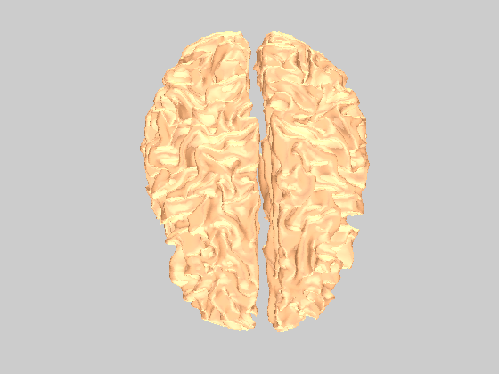
View mesh (full mode : Better rendering, allows to double click on the mesh to pick a point)
clear options options.camera_mode = 2; % full mode smart_figure('demo_mesh_processing'); close all mesh_display(points,faces,options);
options.camera_mode = 2; % full mode
smart_figure('demo_mesh_processing'); close all
mesh_display(points,faces,options);
%% Print mesh infos
mesh_info(points,faces);
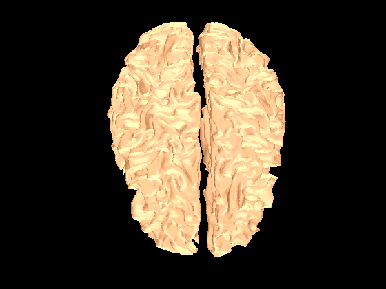
Print mesh infos
mesh_info(points,faces); % %% Print mesh statistics % [face_normals, face_areas, centers, normals, point_areas, ... % suspect_faces, nfaces_per_point, duplicated_faces, not_twice_faces] = mesh_stats(points,faces,1); %
--- Inspecting mesh : Nb points : 37319 Nb faces : 74630 Min area : 0.012349 Max area : 7.1397 Nb components : 2 Components sizes : 18498 18821 Is closed : 1 % %% Print mesh statistics % [face_normals, face_areas, centers, normals, point_areas, ... % suspect_faces, nfaces_per_point, duplicated_faces, not_twice_faces] = mesh_stats(points,faces,1); % %% Compute new normals new_normals = mesh_normals(points,faces);
Compute new normals
new_normals = mesh_normals(points,faces);
%% Compute mesh adjacency matrix A = mesh_adjacency(faces);
Compute mesh adjacency matrix
A = mesh_adjacency(faces);
%% Compute mesh incidence matrix Ic = mesh_incidence(faces);
Compute mesh incidence matrix
Ic = mesh_incidence(faces);
%% Compute triangle areas areas = mesh_cell_areas(points,faces);
Compute triangle areas
areas = mesh_cell_areas(points,faces); smart_figure('demo_mesh_processing'); clf hist(areas) title('Cell areas')
smart_figure('demo_mesh_processing'); clf
hist(areas)
title('Cell areas')
%% Decimate mesh
[points_small,faces_small,normals_small] = mesh_decimate(points,faces,0.1); % divide number of points by 10
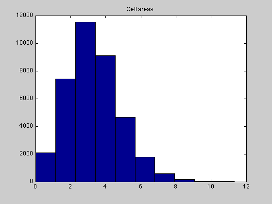
Decimate mesh
[points_small,faces_small,normals_small] = mesh_decimate(points,faces,0.1); % divide number of points by 10
%% Smooth mesh clear options
Smooth mesh
clear options options.smoothing = 0.75; options.niter = 50; [points_smooth,A] = mesh_smooth(points,faces,options); smart_figure('demo_mesh_processing'); clf mesh_display(points_smooth,faces);
options.smoothing = 0.75;
options.niter = 50;
[points_smooth,A] = mesh_smooth(points,faces,options);
Computing Connectivity (Mex File)
Smoothing Mesh
smart_figure('demo_mesh_processing'); clf
mesh_display(points_smooth,faces);
%% Compute mesh curvature texture
clear options
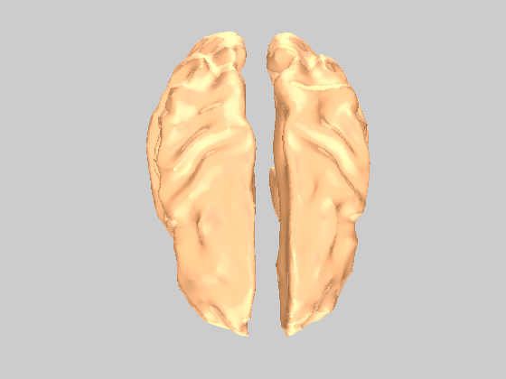
Compute mesh curvature texture
clear options options.niter_smooth = 0; [curv,curv_sigmoid] = mesh_curvature(points,faces,options); smart_figure('demo_mesh_processing'); clf clear options options.face_vertex_color = curv; options.face_vertex_color = curv_sigmoid; mesh_display(points_smooth,faces,options);
options.niter_smooth = 0;
[curv,curv_sigmoid] = mesh_curvature(points,faces,options);
smart_figure('demo_mesh_processing'); clf
clear options
options.face_vertex_color = curv;
options.face_vertex_color = curv_sigmoid;
mesh_display(points_smooth,faces,options);
%% Smoothing a function defined over a triangulation
L = mesh_smoothing_matrix(points,faces);
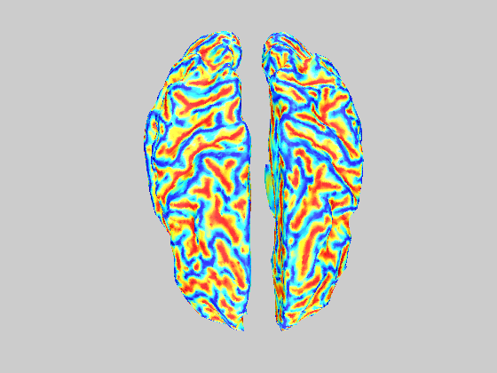
Smoothing a function defined over a triangulation
L = mesh_smoothing_matrix(points,faces); smooth_curv = L*L*L*L*curv; smart_figure('demo_mesh_processing'); clf clear options options.face_vertex_color = smooth_curv; mesh_display(points_smooth,faces,options);
smooth_curv = L*L*L*L*curv;
smart_figure('demo_mesh_processing'); clf
clear options
options.face_vertex_color = smooth_curv;
mesh_display(points_smooth,faces,options);
%% Compute mesh gradient and laplacian with P1 discretization
grad = mesh_gradient(points,faces);
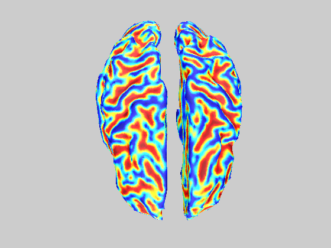
Compute mesh gradient and laplacian with P1 discretization
grad = mesh_gradient(points,faces); laplacian = grad'*grad;
laplacian = grad'*grad;
%% Superpose colors (curvature + activation)
smart_figure('demo_mesh_processing'); clf
Superpose colors (curvature + activation)
smart_figure('demo_mesh_processing'); clf activations = zeros(size(points,1),1); activations(2000) = 1; activations = L*(L*(L*(L*activations))); clear options options.colors_transparency = 0.2; blended_colors = blend_data(curv,activations,options); clear options options.face_vertex_color = blended_colors; mesh_display(points_smooth,faces,options);
activations = zeros(size(points,1),1); activations(2000) = 1; activations = L*(L*(L*(L*activations))); clear options options.colors_transparency = 0.2; blended_colors = blend_data(curv,activations,options); clear options options.face_vertex_color = blended_colors; mesh_display(points_smooth,faces,options); %% Compute mesh connected components labels = mesh_components(faces);
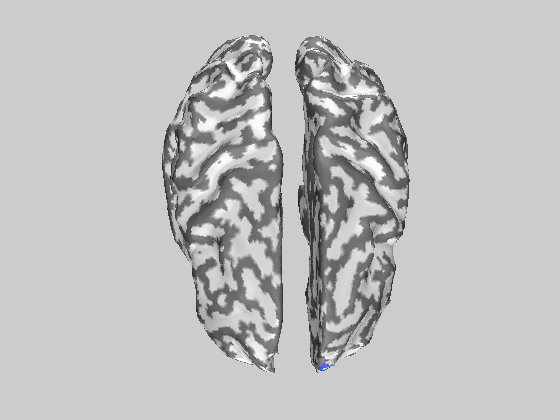
Compute mesh connected components
labels = mesh_components(faces); smart_figure('demo_mesh_processing'); clf clear options options.face_vertex_color = labels; mesh_display(points,faces,options);
smart_figure('demo_mesh_processing'); clf
clear options
options.face_vertex_color = labels;
mesh_display(points,faces,options);
%% Remove some points of the mesh
component_idx = find(labels == 1);
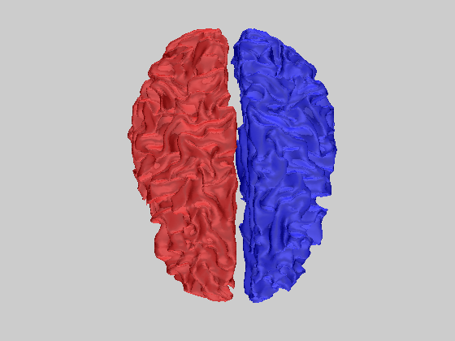
Remove some points of the mesh
component_idx = find(labels == 1);
[cpoints,cfaces,cnormals] = mesh_remove_points(points,faces,normals,component_idx);
smart_figure('demo_mesh_processing'); clf
mesh_display(cpoints,cfaces);
[cpoints,cfaces,cnormals] = mesh_remove_points(points,faces,normals,component_idx);
smart_figure('demo_mesh_processing'); clf
mesh_display(cpoints,cfaces);
%% Check if mesh is closed
is_closed = mesh_is_closed(cfaces);
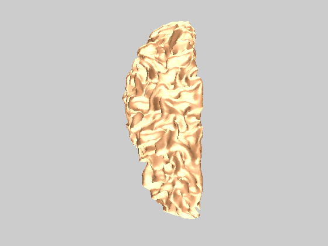
Check if mesh is closed
is_closed = mesh_is_closed(cfaces);
disp(['mesh is closed : ',num2str(is_closed)]);
disp(['mesh is closed : ',num2str(is_closed)]); mesh is closed : 1 %% Mesh generator from a point cloud random_points = randn(5000,3);
Mesh generator from a point cloud
random_points = randn(5000,3); random_points(random_points(:,3)<0,:) = []; random_points = random_points ./ repmat(sqrt(sum(random_points.^2,2)),1,3); random_faces = mesh_generator(random_points); smart_figure('demo_mesh_processing'); clf clear options options.face_color = 'none'; options.edge_color = 'k'; mesh_display(random_points,random_faces,options);
random_points(random_points(:,3)<0,:) = [];
random_points = random_points ./ repmat(sqrt(sum(random_points.^2,2)),1,3);
random_faces = mesh_generator(random_points);
method =
default
smart_figure('demo_mesh_processing'); clf
clear options
options.face_color = 'none';
options.edge_color = 'k';
mesh_display(random_points,random_faces,options);
%% Get points on the border of a mesh
border_idx = mesh_border(random_faces);
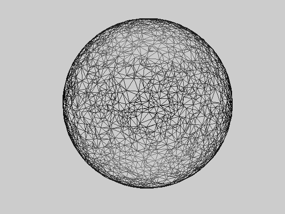
Get points on the border of a mesh
border_idx = mesh_border(random_faces); smart_figure('demo_mesh_processing'); hold on glyph_display(random_points(border_idx,:)); hold off
smart_figure('demo_mesh_processing');
hold on
glyph_display(random_points(border_idx,:));
hold off
%% Compute distance maps from multiple point in the mesh (Djikstra algorithm on each select node)
dist_max = 50; % Maximum distance to consider
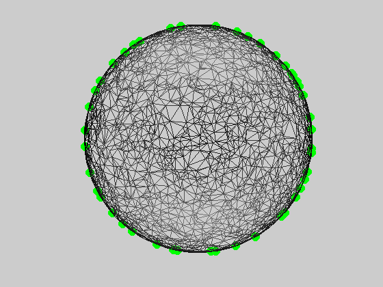
Compute distance maps from multiple point in the mesh (Djikstra algorithm on each select node)
dist_max = 50; % Maximum distance to consider D = mesh_distance(points,faces,1:500,dist_max); % Run on 500 points smart_figure('demo_mesh_processing'); clf mesh_display_light(points,faces,D(:,1)) figure mesh_display_light(points,faces,D(:,10)) close all
D = mesh_distance(points,faces,1:500,dist_max); % Run on 500 points
Running Djikstra algorithm
smart_figure('demo_mesh_processing'); clf
mesh_display_light(points,faces,D(:,1))
ans =
184.0072
figure
mesh_display_light(points,faces,D(:,10))
ans =
422.0062
close all
%% Compute patches on the mesh from multiple points and for multiple sizes
dists = [0:2:10]; % Radius of patches to consider
Compute patches on the mesh from multiple points and for multiple sizes
dists = [0:2:10]; % Radius of patches to consider pidx = 1:20:length(points); P = mesh_all_patch(points,faces,dists,pidx); for didx=1:length(dists) close all smart_figure('demo_mesh_processing'); clf mesh_display_light(points,faces,double(P(:,1+(didx-1)*length(pidx)))); end
pidx = 1:20:length(points);
P = mesh_all_patch(points,faces,dists,pidx);
Computing 11196 patches
[********************]
for didx=1:length(dists)
close all
smart_figure('demo_mesh_processing'); clf
mesh_display_light(points,faces,double(P(:,1+(didx-1)*length(pidx))));
close all
smart_figure('demo_mesh_processing'); clf
mesh_display_light(points,faces,double(P(:,1+(didx-1)*length(pidx))));
close all
smart_figure('demo_mesh_processing'); clf
mesh_display_light(points,faces,double(P(:,1+(didx-1)*length(pidx))));
close all
smart_figure('demo_mesh_processing'); clf
mesh_display_light(points,faces,double(P(:,1+(didx-1)*length(pidx))));
close all
smart_figure('demo_mesh_processing'); clf
mesh_display_light(points,faces,double(P(:,1+(didx-1)*length(pidx))));
close all
smart_figure('demo_mesh_processing'); clf
mesh_display_light(points,faces,double(P(:,1+(didx-1)*length(pidx))));
end
%% Rand 1D line on mesh
idx = mesh_rand_line(points,faces,500,1);
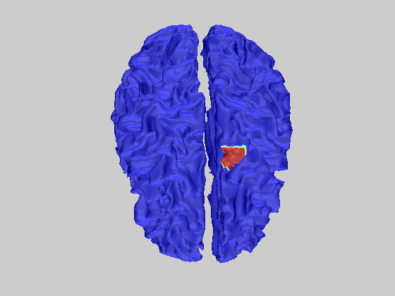
Rand 1D line on mesh
idx = mesh_rand_line(points,faces,500,1);
isolevels{1} = [idx(1:end-1)',idx(2:end)'];
smart_figure('demo_mesh_processing'); clf
clear options
options.camera_mode = 0; % default mode
mesh_display(points,faces,options);
hold on
mesh_display_isolevels(points,faces,isolevels);
hold off
Computing Connectivity (Mex File)
isolevels{1} = [idx(1:end-1)',idx(2:end)'];
smart_figure('demo_mesh_processing'); clf
clear options
options.camera_mode = 0; % default mode
mesh_display(points,faces,options);
hold on
mesh_display_isolevels(points,faces,isolevels);
hold off
%% Compute all pairwise distances on the mesh using Floyd-Warshall algorithm
[points,faces,normals] = load_tri('data/skull.tri');
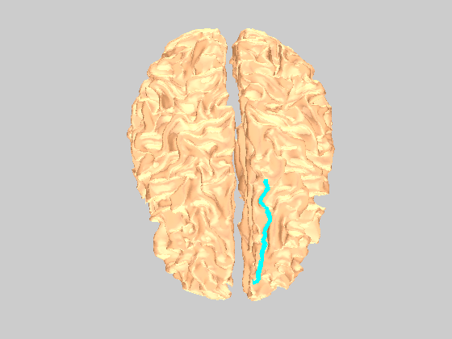
Compute all pairwise distances on the mesh using Floyd-Warshall algorithm
[points,faces,normals] = load_tri('data/skull.tri'); D = mesh_all_distances(points,faces); smart_figure('demo_mesh_processing'); clf mesh_display_light(points,faces,D(:,1))
D = mesh_all_distances(points,faces);
Running Floyd-Warshall algorithm
smart_figure('demo_mesh_processing'); clf
mesh_display_light(points,faces,D(:,1))
ans =
170.0094
%% Update faces to have them correctly oriented (according to the center of the mesh)
[faces] = mesh_faces_reorient(points,faces);
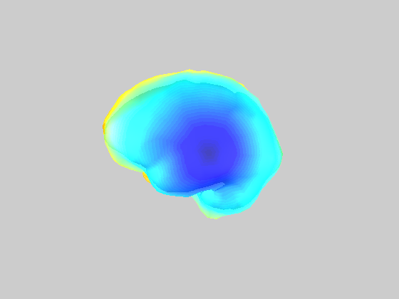
Update faces to have them correctly oriented (according to the center of the mesh)
[faces] = mesh_faces_reorient(points,faces);
Flipping 0 faces %% Test if a point is inside or outside mesh test_point = points(1,:)-randn(1,3)/10;
Test if a point is inside or outside mesh
test_point = points(1,:)-randn(1,3)/10; clear options options.display_mesh = true; clc is_inside = mesh_is_inside(points,faces,test_point,options); if is_inside, disp('Point is inside'); else, disp('Point is outside'); end echo off
clear options
options.display_mesh = true;
clc
is_inside = mesh_is_inside(points,faces,test_point,options);
if is_inside, disp('Point is inside');
else, disp('Point is outside'); end
Point is outside
echo off
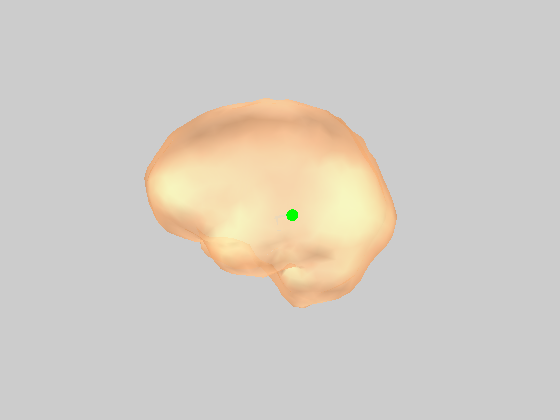